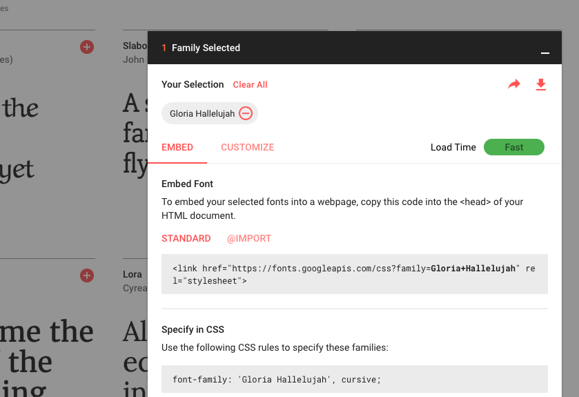
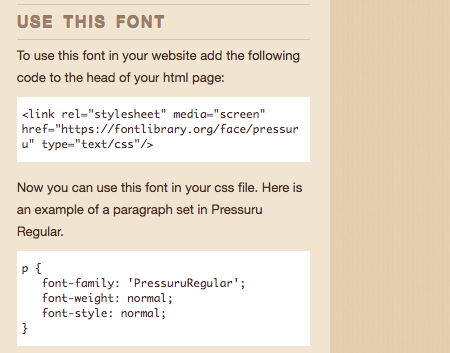

Description
In this learning activity students draw text with different fonts (both system fonts and custom ones), manipulating their placement, size, and color.
Description
In this learning activity students draw text with different fonts (both system fonts and custom ones), manipulating their placement, size, and color.
Teacher support Resources
Step by Step
To draw text in p5, we use the text function. Its first parameter sets the text to display, the second and third its position. Size is set calling fontSize.
The font can be changed by calling textFont. Some fonts come installed in most computers. They are called 'system fonts'. Common examples are "Arial", “Courier,” “Courier New,” “Georgia,” “Helvetica,” “Palatino,” “Times New Roman,” “Trebuchet MS,” and “Verdana”.
Custom fonts might be installed on our computer, but not on our user's. To ensure that our text will be displayed correctly when using less common fonts, we can follow one of the following approaches.
Web fonts are downloaded from a server upon request. Many options are available, often for free, in websites like Google Fonts and Open Font library. Once we have chosen a font, we can copy an 'embed' link from the website. It looks like this:
<link href="http://fonts.googleapis.com/css?family=Source+Code+Pro" rel="stylesheet" type="text/css">


We then paste the embed link into the head section of our sketches' index.html file:

Now that the web font is linked to our sketch, we can use it with textFont as before:
The steps to include a custom font in our sketch are similar to those we took to include an image in the previous learning activity. We copy the file into our sketch folder (p5 supports the TTF and OTF file formats), load it into a variable preload using loadFont, and then set our text to it using textFont
p5's color-setting functions, fill and stroke, also affect text:
We can constrain a text to be drawn within a box by adding x, y, width and height parameters to the call to text:
Go to one of the font websites listed above, choose a couple of fonts, and create a text-based visual composition that allows the user to input text. Try changing the text's position, size, color ––or even its font–– in response to user actions.
Note: this learning activity is adapted from chapter 7 of the book Getting Started on p5.